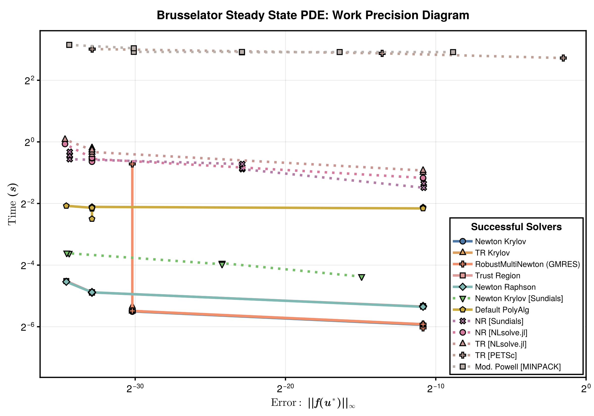

Ill-Conditioned Nonlinear System Work-Precision Diagrams
Setup
Fetch required packages
using NonlinearSolve, LinearAlgebra, SparseArrays, DiffEqDevTools,
CairoMakie, Symbolics, BenchmarkTools, PolyesterForwardDiff, LinearSolve, Sundials,
Enzyme, SparseConnectivityTracer, DifferentiationInterface, SparseMatrixColorings
import NLsolve, MINPACK, PETSc, RecursiveFactorization
const RUS = RadiusUpdateSchemes;
BenchmarkTools.DEFAULT_PARAMETERS.seconds = 0.2;Define a utility to timeout the benchmark after a certain time.
# Taken from ReTestItems.jl
function timeout(f, timeout)
cond = Threads.Condition()
timer = Timer(timeout) do tm
close(tm)
ex = ErrorException("timed out after $timeout seconds")
@lock cond notify(cond, ex; error=false)
end
Threads.@spawn begin
try
ret = $f()
isopen(timer) && @lock cond notify(cond, ret)
catch e
isopen(timer) && @lock cond notify(cond, CapturedException(e, catch_backtrace()); error=true)
finally
close(timer)
end
end
return @lock cond wait(cond) # will throw if we timeout
endtimeout (generic function with 1 method)Define the Brussletor problem.
brusselator_f(x, y) = (((x - 3 // 10) ^ 2 + (y - 6 // 10) ^ 2) ≤ 0.01) * 5
limit(a, N) = ifelse(a == N + 1, 1, ifelse(a == 0, N, a))
function init_brusselator_2d(xyd, N)
N = length(xyd)
u = zeros(N, N, 2)
for I in CartesianIndices((N, N))
x = xyd[I[1]]
y = xyd[I[2]]
u[I, 1] = 22 * (y * (1 - y))^(3 / 2)
u[I, 2] = 27 * (x * (1 - x))^(3 / 2)
end
return u
end
function generate_brusselator_problem(N::Int; sparsity = nothing, kwargs...)
xyd_brusselator = range(0; stop = 1, length = N)
function brusselator_2d_loop(du_, u_, p)
A, B, α, δx = p
α = α / δx ^ 2
du = reshape(du_, N, N, 2)
u = reshape(u_, N, N, 2)
@inbounds @simd for I in CartesianIndices((N, N))
i, j = Tuple(I)
x, y = xyd_brusselator[I[1]], xyd_brusselator[I[2]]
ip1, im1 = limit(i + 1, N), limit(i - 1, N)
jp1, jm1 = limit(j + 1, N), limit(j - 1, N)
du[i, j, 1] = α * (u[im1, j, 1] + u[ip1, j, 1] + u[i, jp1, 1] + u[i, jm1, 1] -
4u[i, j, 1]) +
B + u[i, j, 1] ^ 2 * u[i, j, 2] - (A + 1) * u[i, j, 1] +
brusselator_f(x, y)
du[i, j, 2] = α * (u[im1, j, 2] + u[ip1, j, 2] + u[i, jp1, 2] + u[i, jm1, 2] -
4u[i, j, 2]) +
A * u[i, j, 1] - u[i, j, 1] ^ 2 * u[i, j, 2]
end
return nothing
end
return NonlinearProblem(
NonlinearFunction(brusselator_2d_loop; sparsity),
vec(init_brusselator_2d(xyd_brusselator, N)),
(3.4, 1.0, 10.0, step(xyd_brusselator));
kwargs...
)
endgenerate_brusselator_problem (generic function with 1 method)function get_ordering(x::AbstractMatrix)
idxs = Vector{Int}(undef, size(x, 1))
placed = zeros(Bool, size(x, 1))
idx = 1
for j in size(x, 2):-1:1
row = view(x, :, j)
idxs_row = sortperm(row; by = x -> isnan(x) ? Inf : (x == -1 ? Inf : x))
for i in idxs_row
if !placed[i] && !isnan(row[i]) && row[i] ≠ -1
idxs[idx] = i
placed[i] = true
idx += 1
idx > length(idxs) && break
end
end
idx > length(idxs) && break
end
return idxs
endget_ordering (generic function with 1 method)Scaling of Sparsity Detection Algorithm
We increase the problem size, and compute the jacobian 10 times similar to a real workload where the jacobian is computed several times and amortizes the cost for computing the sparsity pattern.
test_problem = generate_brusselator_problem(4)
bruss_f!, u0 = (du, u) -> test_problem.f(du, u, test_problem.p), test_problem.u0
y = similar(u0)
J = Float64.(ADTypes.jacobian_sparsity(bruss_f!, y, u0, TracerSparsityDetector()))
colors = fast_coloring(J, ColoringProblem(), GreedyColoringAlgorithm())
begin
J_ = similar(J)
rows = rowvals(J)
vals = nonzeros(J)
for j in 1:size(J, 2)
for i in nzrange(J, j)
row = rows[i]
J_[j, row] = colors[j] # spy does a ordering I can't figure out. so transposing it here
end
end
end
function cache_and_compute_10_jacobians(adtype, f!::F, y, x, p) where {F}
prep = DifferentiationInterface.prepare_jacobian(f!, y, adtype, x, Constant(p))
J = DifferentiationInterface.jacobian(f!, y, prep, adtype, x, Constant(p))
for _ in 1:9
DifferentiationInterface.jacobian!(f!, y, J, prep, adtype, x, Constant(p))
end
return J
end
Ns = [2^i for i in 1:8];
adtypes = [
(
AutoSparse(
AutoFiniteDiff();
sparsity_detector=TracerSparsityDetector(),
coloring_algorithm=GreedyColoringAlgorithm(LargestFirst())
),
[:finitediff, :exact_sparse]
),
(
AutoSparse(
AutoPolyesterForwardDiff();
sparsity_detector=TracerSparsityDetector(),
coloring_algorithm=GreedyColoringAlgorithm(LargestFirst())
),
[:polyester, :exact_sparse]
),
(
AutoSparse(
AutoEnzyme(; mode=Enzyme.Forward);
sparsity_detector=TracerSparsityDetector(),
coloring_algorithm=GreedyColoringAlgorithm(LargestFirst())
),
[:enzyme, :exact_sparse]
),
(
AutoSparse(
AutoFiniteDiff();
sparsity_detector=DenseSparsityDetector(AutoFiniteDiff(); atol=1e-5),
coloring_algorithm=GreedyColoringAlgorithm(LargestFirst())
),
[:finitediff, :approx_sparse]
),
(
AutoSparse(
AutoPolyesterForwardDiff();
sparsity_detector=DenseSparsityDetector(
AutoPolyesterForwardDiff(); atol=1e-5
),
coloring_algorithm=GreedyColoringAlgorithm(LargestFirst())
),
[:polyester, :approx_sparse]
),
(
AutoSparse(
AutoEnzyme(; mode=Enzyme.Forward);
sparsity_detector=DenseSparsityDetector(
AutoEnzyme(; mode=Enzyme.Forward); atol=1e-5
),
coloring_algorithm=GreedyColoringAlgorithm(LargestFirst())
),
[:enzyme, :approx_sparse]
),
(
AutoPolyesterForwardDiff(),
[:polyester, :none]
),
];
times = Matrix{Float64}(undef, length(Ns), length(adtypes));
for (i, N) in enumerate(Ns)
str = "$(lpad(N, 10)) "
test_problem = generate_brusselator_problem(N)
bruss_f! = test_problem.f
u0 = test_problem.u0
y = similar(u0)
for (j, (adtype, _)) in enumerate(adtypes)
times[i, j] = @belapsed begin
$(cache_and_compute_10_jacobians)(
$(adtype), $(bruss_f!), $(y), $(u0), $(test_problem.p)
)
end
str = str * "$(lpad(times[i, j], 16))"
end
println(str)
end
nothing2 1.974e-5 1.468e-5 1.609e-5 1.653e-5
1.022e-5 1.167e-5 1.229e-5
4 7.208e-5 5.1469e-5 5.451e-5 6.5759e-5
4.002e-5 4.252e-5 5.0959e-5
8 0.000271307 0.000211768 0.000204228 0.000333017
0.000241027 0.000229338 0.000660294
16 0.001048481 0.000876253 0.000823662 0.002903635
0.00234182 0.002141462 0.010793776
32 0.004439542 0.003891686 0.003448811 0.036322325
0.030441757 0.027064646 0.179627387
64 0.021031659 0.019135955 0.01737604 0.56334806
0.464029669 0.417120924 2.896505444
128 0.233382383 0.212826621 0.202984315 12.376377912
7.18849567 6.669337492 47.365001664
256 2.805276774 2.798079127 2.730241304 190.48951247
114.533257835 104.573494343 1110.189320069Plotting the results.
symbol_to_adname = Dict(
:finitediff => "Finite Diff",
:forwarddiff => "Forward Mode AD",
:polyester => "Threaded Forward Mode AD",
:enzyme => "Forward Mode AD (Enzyme)",
)
fig = begin
cycle = Cycle([:marker], covary=true)
plot_theme = Theme(Lines=(; cycle), Scatter=(; cycle))
with_theme(plot_theme) do
fig = Figure(; size=(1400, 1400 * 0.5))
ax = Axis(fig[1, 1]; title="Sparsity Pattern for 2D Brusselator Jacobian",
titlesize=22, titlegap=10,
xticksize=20, yticksize=20, xticklabelsize=20, yticklabelsize=20,
xtickwidth=2.5, ytickwidth=2.5, spinewidth=2.5, yreversed=true)
spy!(ax, J_; markersize=1, marker=:circle, framecolor=:lightgray,
colormap=:tableau_20)
ax = Axis(fig[1, 2]; title="Scaling of Sparse Jacobian Computation",
titlesize=22, titlegap=10, xscale=log2, yscale=log2,
xticksize=20, yticksize=20, xticklabelsize=20, yticklabelsize=20,
xtickwidth=2.5, ytickwidth=2.5, spinewidth=2.5,
xlabel=L"Input Dimension ($\mathbf{N}$)",
ylabel=L"Time $\mathbf{(s)}$", xlabelsize=22,
ylabelsize=22, yaxisposition=:right)
colors = cgrad(:tableau_20, length(adtypes); categorical=true)
line_list = []
scatter_list = []
Ns_ = Ns .^ 2 .* 2
linestyles = [:solid, :solid, :solid, :dash, :dash, :dash, :dot, :dot]
for (i, times) in enumerate(eachcol(times))
l = lines!(Ns_, times; linewidth=5, color=colors[i], linestyle=linestyles[i])
push!(line_list, l)
sc = scatter!(Ns_, times; markersize=16, strokewidth=2, color=colors[i])
push!(scatter_list, sc)
end
tracer_idxs = [idx for idx in 1:length(adtypes) if :exact_sparse ∈ adtypes[idx][2]]
group_tracer = [
[
LineElement(;
color=line_list[idx].color,
linestyle=line_list[idx].linestyle,
linewidth=line_list[idx].linewidth,
),
MarkerElement(;
color=scatter_list[idx].color,
marker=scatter_list[idx].marker,
strokewidth=scatter_list[idx].strokewidth,
markersize=scatter_list[idx].markersize,
),
] for idx in tracer_idxs
]
local_sparse_idxs = [idx for idx in 1:length(adtypes) if :approx_sparse ∈ adtypes[idx][2]]
group_local_sparse = [
[
LineElement(;
color=line_list[idx].color,
linestyle=line_list[idx].linestyle,
linewidth=line_list[idx].linewidth,
),
MarkerElement(;
color=scatter_list[idx].color,
marker=scatter_list[idx].marker,
strokewidth=scatter_list[idx].strokewidth,
markersize=scatter_list[idx].markersize,
),
] for idx in local_sparse_idxs
]
non_sparse_idxs = [idx for idx in 1:length(adtypes) if :none ∈ adtypes[idx][2]]
group_nonsparse = [
[
LineElement(;
color=line_list[idx].color,
linestyle=line_list[idx].linestyle,
linewidth=line_list[idx].linewidth,
),
MarkerElement(;
color=scatter_list[idx].color,
marker=scatter_list[idx].marker,
strokewidth=scatter_list[idx].strokewidth,
markersize=scatter_list[idx].markersize,
),
] for idx in non_sparse_idxs
]
axislegend(
ax,
[group_tracer, group_local_sparse, group_nonsparse],
[
[symbol_to_adname[adtypes[idx][2][1]] for idx in tracer_idxs],
[symbol_to_adname[adtypes[idx][2][1]] for idx in local_sparse_idxs],
[symbol_to_adname[adtypes[idx][2][1]] for idx in non_sparse_idxs],
],
["Exact Sparsity", "Approx. Local Sparsity", "Dense"];
position=:lt, framevisible=true, framewidth=2.5, titlesize=18,
labelsize=16, patchsize=(40.0f0, 20.0f0)
)
fig
end
end
save("brusselator_sparse_jacobian_scaling.svg", fig)CairoMakie.Screen{SVG}Scaling with Problem Size
First, let us experiment the scaling of each algorithm with the problem size.
Ns = vcat(collect(2 .^ (2:7)), [150, 175, 200])
solvers_scaling = [
(; pkg = :nonlinearsolve, sparsity = :none, name = "NR (No Sparsity)", alg = NewtonRaphson()),
(; pkg = :nonlinearsolve, sparsity = :exact, name = "NR (Exact Sparsity)", alg = NewtonRaphson()),
(; pkg = :wrapper, sparsity = :none, name = "NR [NLsolve.jl]", alg = NLsolveJL(; method = :newton, autodiff = :forward)),
(; pkg = :wrapper, sparsity = :none, name = "NR [Sundials]", alg = KINSOL(; linear_solver = :LapackDense, maxsetupcalls=1)),
(; pkg = :wrapper, sparsity = :none, name = "NR [PETSc] (No Sparsity)", alg = PETScSNES(; snes_type = "newtonls", snes_linesearch_type = "basic", autodiff = missing)),
(; pkg = :wrapper, sparsity = :exact, name = "NR [PETSc] (Exact Sparsity)", alg = PETScSNES(; snes_type = "newtonls", snes_linesearch_type = "basic")),
(; pkg = :nonlinearsolve, sparsity = :none, name = "TR (No Sparsity)", alg = TrustRegion(; radius_update_scheme = RUS.NLsolve)),
(; pkg = :nonlinearsolve, sparsity = :exact, name = "TR (Exact Sparsity)", alg = TrustRegion(; radius_update_scheme = RUS.NLsolve)),
(; pkg = :wrapper, sparsity = :none, name = "TR [NLsolve.jl]", alg = NLsolveJL(; autodiff = :forward)),
(; pkg = :wrapper, sparsity = :none, name = "TR [PETSc] (No Sparsity)", alg = PETScSNES(; snes_type = "newtontr", autodiff = missing)),
(; pkg = :wrapper, sparsity = :exact, name = "TR [PETSc] (Exact Sparsity)", alg = PETScSNES(; snes_type = "newtontr")),
(; pkg = :wrapper, sparsity = :none, name = "Mod. Powell [MINPACK]", alg = CMINPACK()),
]
GC.enable(false) # for PETSc
runtimes_scaling = fill(-1.0, length(solvers_scaling), length(Ns))
for (i, N) in enumerate(Ns)
prob_dense = generate_brusselator_problem(N)
prob_exact_sparse = generate_brusselator_problem(N;
sparsity = TracerSparsityDetector()
)
@info "Benchmarking N = $N"
for (j, solver) in enumerate(solvers_scaling)
ptype = solver.sparsity
alg = solver.alg
name = solver.name
prob = if ptype == :none
prob_dense
elseif ptype == :approx
# With Tracing based sparsity detection, we dont need this any more
error("Approximate Sparsity not implemented")
elseif ptype == :exact
prob_exact_sparse
end
if (j > 1 && runtimes_scaling[j - 1, i] == -1) ||
(alg isa CMINPACK && N > 32) ||
(alg isa KINSOL && N > 64) ||
(alg isa NLsolveJL && N > 64 && alg.method == :trust_region) ||
(alg isa GeneralizedFirstOrderAlgorithm && alg.name == :TrustRegion && N > 64) ||
(alg isa NLsolveJL && N > 128 && alg.method == :newton) ||
(alg isa GeneralizedFirstOrderAlgorithm && alg.name == :NewtonRaphson && N > 128 && ptype == :none) ||
(alg isa PETScSNES && N > 64)
# The last benchmark failed so skip this too
runtimes_scaling[j, i] = NaN
@warn "$(name): Would Have Timed out"
else
function benchmark_function()
termination_condition = (alg isa PETScSNES || alg isa KINSOL) ?
nothing :
NonlinearSolveBase.AbsNormTerminationMode(Base.Fix1(maximum, abs))
sol = solve(prob, alg; abstol=1e-6, reltol=1e-6, termination_condition)
runtimes_scaling[j, i] = @belapsed solve($prob, $alg; abstol=1e-6,
reltol=1e-6, termination_condition=$termination_condition)
@info "$(name): $(runtimes_scaling[j, i]) | $(norm(sol.resid, Inf)) | $(sol.retcode)"
end
timeout(benchmark_function, 600)
if runtimes_scaling[j, i] == -1
@warn "$(name): Timed out"
runtimes_scaling[j, i] = NaN
end
end
end
println()
endPlot the results.
fig = begin
ASPECT_RATIO = 0.7
WIDTH = 1200
HEIGHT = round(Int, WIDTH * ASPECT_RATIO)
STROKEWIDTH = 2.5
cycle = Cycle([:marker], covary = true)
colors = cgrad(:tableau_20, length(solvers_scaling); categorical = true)
theme = Theme(Lines = (cycle = cycle,), Scatter = (cycle = cycle,))
LINESTYLES = Dict(
(:nonlinearsolve, :none) => :solid,
(:nonlinearsolve, :exact) => :dashdot,
# (:simplenonlinearsolve, :none) => :solid,
(:wrapper, :exact) => :dash,
(:wrapper, :none) => :dot,
)
Ns_ = Ns .^ 2 .* 2
with_theme(theme) do
fig = Figure(; size = (WIDTH, HEIGHT))
ax = Axis(fig[1, 1:3], ylabel = L"Time ($s$)", xlabel = L"Problem Size ($N$)",
xscale = log2, yscale = log2, xlabelsize = 22, ylabelsize = 22,
xticklabelsize = 20, yticklabelsize = 20, xtickwidth = STROKEWIDTH,
ytickwidth = STROKEWIDTH, spinewidth = STROKEWIDTH)
idxs = get_ordering(runtimes_scaling)
ls, scs = [], []
for (i, solver) in zip(idxs, solvers_scaling[idxs])
linestyle = LINESTYLES[(solver.pkg, solver.sparsity)]
l = lines!(Ns_, runtimes_scaling[i, :]; linewidth = 5, color = colors[i],
linestyle)
sc = scatter!(Ns_, runtimes_scaling[i, :]; markersize = 16, strokewidth = 2,
color = colors[i])
push!(ls, l)
push!(scs, sc)
end
main_legend = [
[
LineElement(; color = ls[idx].color, linestyle = ls[idx].linestyle,
linewidth = ls[idx].linewidth),
MarkerElement(; color = scs[idx].color, marker = scs[idx].marker,
markersize = scs[idx].markersize, strokewidth = scs[idx].strokewidth)
]
for idx in 1:length(solvers_scaling)
]
sparsity_legend = [
LineElement(; linestyle = :solid, linewidth = 5),
# LineElement(; linestyle = :dash, linewidth = 5),
LineElement(; linestyle = :dashdot, linewidth = 5),
]
axislegend(ax, main_legend, [s.name for s in solvers_scaling[idxs]],
"Successful Solvers";
framevisible=true, framewidth = STROKEWIDTH, orientation = :vertical,
titlesize = 20, nbanks = 1, labelsize = 16,
tellheight = true, tellwidth = false, patchsize = (60.0f0, 20.0f0),
position = :rb)
axislegend(ax, sparsity_legend,
[
"No Sparsity Detection",
# "Approx. Sparsity",
"Exact Sparsity"
],
"Sparsity Detection"; framevisible=true, framewidth = STROKEWIDTH,
orientation = :vertical, titlesize = 20, nbanks = 1, labelsize = 16,
tellheight = true, tellwidth = false, patchsize = (60.0f0, 20.0f0),
position = :lt)
fig[0, :] = Label(fig,
"Brusselator 2D: Scaling of First-Order Nonlinear Solvers with Problem Size",
fontsize = 24, tellwidth = false, font = :bold)
return fig
end
end
save("brusselator_scaling.svg", fig)CairoMakie.Screen{SVG}Work-Precision Diagram
In this section, we will generate the work-precision of the solvers. All solvers that can exploit sparsity will automatically do so.
solvers_all = [
(; pkg = :nonlinearsolve, name = "Default PolyAlg", solver = Dict(:alg => FastShortcutNonlinearPolyalg())),
(; pkg = :nonlinearsolve, name = "RobustMultiNewton (GMRES)", solver = Dict(:alg => RobustMultiNewton(; linsolve = KrylovJL_GMRES()))),
(; pkg = :nonlinearsolve, name = "Newton Raphson", solver = Dict(:alg => NewtonRaphson(; linsolve = nothing))),
(; pkg = :nonlinearsolve, name = "Newton Krylov", solver = Dict(:alg => NewtonRaphson(; linsolve = KrylovJL_GMRES()))),
(; pkg = :nonlinearsolve, name = "Trust Region", solver = Dict(:alg => TrustRegion())),
(; pkg = :nonlinearsolve, name = "TR Krylov", solver = Dict(:alg => TrustRegion(; linsolve = KrylovJL_GMRES()))),
(; pkg = :wrapper, name = "NR [NLsolve.jl]", solver = Dict(:alg => NLsolveJL(; method = :newton, autodiff = :forward))),
(; pkg = :wrapper, name = "TR [NLsolve.jl]", solver = Dict(:alg => NLsolveJL(; autodiff = :forward))),
(; pkg = :wrapper, name = "NR [Sundials]", solver = Dict(:alg => KINSOL(; linear_solver = :LapackDense, maxsetupcalls=1))),
(; pkg = :wrapper, name = "Newton Krylov [Sundials]", solver = Dict(:alg => KINSOL(; linear_solver = :GMRES, maxsetupcalls=1, krylov_dim = 1000))),
(; pkg = :wrapper, name = "Mod. Powell [MINPACK]", solver = Dict(:alg => CMINPACK())),
(; pkg = :wrapper, name = "NR [PETSc]", solver = Dict(:alg => PETScSNES(; snes_type = "newtonls", snes_linesearch_type = "basic", autodiff = missing))),
(; pkg = :wrapper, name = "TR [PETSc]", solver = Dict(:alg => PETScSNES(; snes_type = "newtontr", autodiff = missing))),
(; pkg = :wrapper, name = "Newton Krylov [PETSc]", solver = Dict(:alg => PETScSNES(; snes_type = "newtonls", snes_linesearch_type = "basic", ksp_type = "gmres", autodiff = missing, snes_mf = true, ksp_gmres_restart = 1000))),
];prob_wpd = generate_brusselator_problem(32; sparsity = TracerSparsityDetector())
abstols = 1.0 ./ 10 .^ (2:10)
reltols = 1.0 ./ 10 .^ (2:10)
function check_solver(prob, solver)
try
sol = solve(prob, solver.solver[:alg]; abstol = 1e-4, reltol = 1e-4,
maxiters = 10000)
err = norm(sol.resid, Inf)
if !SciMLBase.successful_retcode(sol.retcode)
Base.printstyled("[Warn] Solver $(solver.name) returned retcode $(sol.retcode) with an residual norm = $(norm(sol.resid)).\n";
color = :red)
return false
elseif err > 1e3
Base.printstyled("[Warn] Solver $(solver.name) had a very large residual (norm = $(norm(sol.resid))).\n";
color = :red)
return false
elseif isinf(err) || isnan(err)
Base.printstyled("[Warn] Solver $(solver.name) had a residual of $(err).\n";
color = :red)
return false
end
Base.printstyled("[Info] Solver $(solver.name) successfully solved the problem (norm = $(norm(sol.resid))).\n";
color = :green)
catch e
Base.printstyled("[Warn] Solver $(solver.name) threw an error: $e.\n"; color = :red)
return false
end
return true
end
function generate_wpset(prob, solvers)
# Finds the solvers that can solve the problem
successful_solvers = filter(solver -> check_solver(prob, solver), solvers)
return WorkPrecisionSet(prob, abstols, reltols,
getfield.(successful_solvers, :solver);
names = getfield.(successful_solvers, :name), numruns = 10, error_estimate = :l∞,
maxiters = 1000, verbose = true), successful_solvers
endgenerate_wpset (generic function with 1 method)wp_set, successful_solvers = generate_wpset(prob_wpd, solvers_all);[Info] Solver Default PolyAlg successfully solved the problem (norm = 2.647
6053818757766e-9).
[Info] Solver RobustMultiNewton (GMRES) successfully solved the problem (no
rm = 1.1664069101655303e-8).
[Info] Solver Newton Raphson successfully solved the problem (norm = 2.6476
053818757766e-9).
[Info] Solver Newton Krylov successfully solved the problem (norm = 1.16640
69101655303e-8).
[Info] Solver Trust Region successfully solved the problem (norm = 2.647605
3818757766e-9).
[Info] Solver TR Krylov successfully solved the problem (norm = 1.166406910
1655303e-8).
[Info] Solver NR [NLsolve.jl] successfully solved the problem (norm = 2.629
767216137896e-9).
[Info] Solver TR [NLsolve.jl] successfully solved the problem (norm = 2.629
767216137896e-9).
[Info] Solver NR [Sundials] successfully solved the problem (norm = 1.24839
3048765494e-6).
[Info] Solver Newton Krylov [Sundials] successfully solved the problem (nor
m = 0.0005045549665406284).
[Info] Solver Mod. Powell [MINPACK] successfully solved the problem (norm =
1.9629370283177898e-6).
[Warn] Solver NR [PETSc] returned retcode Failure with an residual norm = 0
.008277151682674046.
[Info] Solver TR [PETSc] successfully solved the problem (norm = 0.00113188
002920334).
[Warn] Solver Newton Krylov [PETSc] returned retcode Failure with an residu
al norm = 0.022043824067284137.Plotting the Work-Precision Diagram.
fig = begin
LINESTYLES = Dict(:nonlinearsolve => :solid, :simplenonlinearsolve => :dash,
:wrapper => :dot)
ASPECT_RATIO = 0.7
WIDTH = 1200
HEIGHT = round(Int, WIDTH * ASPECT_RATIO)
STROKEWIDTH = 2.5
colors = cgrad(:tableau_20, length(successful_solvers); categorical = true)
cycle = Cycle([:marker], covary = true)
plot_theme = Theme(Lines = (; cycle), Scatter = (; cycle))
with_theme(plot_theme) do
fig = Figure(; size = (WIDTH, HEIGHT))
# `textbf` doesn't work
ax = Axis(fig[1, 1], ylabel = L"Time $\mathbf{(s)}$",
xlabelsize = 22, ylabelsize = 22,
xlabel = L"Error: $\mathbf{||f(u^\ast)||_\infty}$",
xscale = log2, yscale = log2, xtickwidth = STROKEWIDTH,
ytickwidth = STROKEWIDTH, spinewidth = STROKEWIDTH,
xticklabelsize = 20, yticklabelsize = 20)
idxs = sortperm(median.(getfield.(wp_set.wps, :times)))
ls, scs = [], []
for (i, (wp, solver)) in enumerate(zip(wp_set.wps[idxs], successful_solvers[idxs]))
(; name, times, errors) = wp
errors = [err.l∞ for err in errors]
l = lines!(ax, errors, times; linestyle = LINESTYLES[solver.pkg], label = name,
linewidth = 5, color = colors[i])
sc = scatter!(ax, errors, times; label = name, markersize = 16, strokewidth = 2,
color = colors[i])
push!(ls, l)
push!(scs, sc)
end
xlims!(ax; high=1)
ylims!(ax; low=5e-3)
axislegend(ax, [[l, sc] for (l, sc) in zip(ls, scs)],
[solver.name for solver in successful_solvers[idxs]], "Successful Solvers";
framevisible=true, framewidth = STROKEWIDTH, position = :rb,
titlesize = 20, labelsize = 16, patchsize = (40.0f0, 20.0f0))
fig[0, :] = Label(fig, "Brusselator Steady State PDE: Work Precision Diagram",
fontsize = 24, tellwidth = false, font = :bold)
fig
end
end
save("brusselator_wpd.svg", fig)CairoMakie.Screen{SVG}Appendix
These benchmarks are a part of the SciMLBenchmarks.jl repository, found at: https://github.com/SciML/SciMLBenchmarks.jl. For more information on high-performance scientific machine learning, check out the SciML Open Source Software Organization https://sciml.ai.
To locally run this benchmark, do the following commands:
using SciMLBenchmarks
SciMLBenchmarks.weave_file("benchmarks/NonlinearProblem","bruss.jmd")Computer Information:
Julia Version 1.10.9
Commit 5595d20a287 (2025-03-10 12:51 UTC)
Build Info:
Official https://julialang.org/ release
Platform Info:
OS: Linux (x86_64-linux-gnu)
CPU: 128 × AMD EPYC 7502 32-Core Processor
WORD_SIZE: 64
LIBM: libopenlibm
LLVM: libLLVM-15.0.7 (ORCJIT, znver2)
Threads: 1 default, 0 interactive, 1 GC (on 128 virtual cores)
Environment:
JULIA_CPU_THREADS = 128
JULIA_DEPOT_PATH = /cache/julia-buildkite-plugin/depots/5b300254-1738-4989-ae0a-f4d2d937f953
Package Information:
Status `/cache/build/exclusive-amdci3-0/julialang/scimlbenchmarks-dot-jl/benchmarks/NonlinearProblem/Project.toml`
[2169fc97] AlgebraicMultigrid v1.0.0
[6e4b80f9] BenchmarkTools v1.6.0
[13f3f980] CairoMakie v0.13.4
[2b5f629d] DiffEqBase v6.167.2
[f3b72e0c] DiffEqDevTools v2.48.0
[a0c0ee7d] DifferentiationInterface v0.6.52
⌃ [7da242da] Enzyme v0.13.37
[40713840] IncompleteLU v0.2.1
[b964fa9f] LaTeXStrings v1.4.0
[d3d80556] LineSearches v7.3.0
[7ed4a6bd] LinearSolve v3.8.0
[4854310b] MINPACK v1.3.0
[2774e3e8] NLsolve v4.5.1
[b7050fa9] NonlinearProblemLibrary v0.1.3
[8913a72c] NonlinearSolve v4.6.0
[ace2c81b] PETSc v0.3.1
[98d1487c] PolyesterForwardDiff v0.1.3
[08abe8d2] PrettyTables v2.4.0
[f2c3362d] RecursiveFactorization v0.2.23
[31c91b34] SciMLBenchmarks v0.1.3
[efcf1570] Setfield v1.1.2
[727e6d20] SimpleNonlinearSolve v2.2.2
[9f842d2f] SparseConnectivityTracer v0.6.17
[0a514795] SparseMatrixColorings v0.4.18
[f1835b91] SpeedMapping v0.3.0
[860ef19b] StableRNGs v1.0.2
[90137ffa] StaticArrays v1.9.13
[c3572dad] Sundials v4.28.0
[0c5d862f] Symbolics v6.38.0
Info Packages marked with ⌃ have new versions available and may be upgradable.
Warning The project dependencies or compat requirements have changed since the manifest was last resolved. It is recommended to `Pkg.resolve()` or consider `Pkg.update()` if necessary.And the full manifest:
Status `/cache/build/exclusive-amdci3-0/julialang/scimlbenchmarks-dot-jl/benchmarks/NonlinearProblem/Manifest.toml`
[47edcb42] ADTypes v1.14.0
[a4c015fc] ANSIColoredPrinters v0.0.1
[621f4979] AbstractFFTs v1.5.0
[1520ce14] AbstractTrees v0.4.5
[7d9f7c33] Accessors v0.1.42
[22286c92] AccurateArithmetic v0.3.8
[79e6a3ab] Adapt v4.3.0
[35492f91] AdaptivePredicates v1.2.0
[2169fc97] AlgebraicMultigrid v1.0.0
[66dad0bd] AliasTables v1.1.3
[27a7e980] Animations v0.4.2
[4fba245c] ArrayInterface v7.18.0
[4c555306] ArrayLayouts v1.11.1
[67c07d97] Automa v1.1.0
[13072b0f] AxisAlgorithms v1.1.0
[39de3d68] AxisArrays v0.4.7
[6e4b80f9] BenchmarkTools v1.6.0
[e2ed5e7c] Bijections v0.1.9
[d1d4a3ce] BitFlags v0.1.9
[62783981] BitTwiddlingConvenienceFunctions v0.1.6
[70df07ce] BracketingNonlinearSolve v1.1.3
[fa961155] CEnum v0.5.0
[2a0fbf3d] CPUSummary v0.2.6
[159f3aea] Cairo v1.1.1
[13f3f980] CairoMakie v0.13.4
[d360d2e6] ChainRulesCore v1.25.1
[fb6a15b2] CloseOpenIntervals v0.1.13
[944b1d66] CodecZlib v0.7.8
[a2cac450] ColorBrewer v0.4.1
[35d6a980] ColorSchemes v3.29.0
[3da002f7] ColorTypes v0.12.1
[c3611d14] ColorVectorSpace v0.11.0
[5ae59095] Colors v0.13.0
[861a8166] Combinatorics v1.0.2
[38540f10] CommonSolve v0.2.4
[bbf7d656] CommonSubexpressions v0.3.1
[f70d9fcc] CommonWorldInvalidations v1.0.0
[34da2185] Compat v4.16.0
[b152e2b5] CompositeTypes v0.1.4
[a33af91c] CompositionsBase v0.1.2
[2569d6c7] ConcreteStructs v0.2.3
[f0e56b4a] ConcurrentUtilities v2.5.0
[8f4d0f93] Conda v1.10.2
[187b0558] ConstructionBase v1.5.8
[d38c429a] Contour v0.6.3
[a2441757] Coverage v1.6.1
[c36e975a] CoverageTools v1.3.2
[adafc99b] CpuId v0.3.1
[a8cc5b0e] Crayons v4.1.1
[9a962f9c] DataAPI v1.16.0
[864edb3b] DataStructures v0.18.22
[e2d170a0] DataValueInterfaces v1.0.0
[927a84f5] DelaunayTriangulation v1.6.4
[2b5f629d] DiffEqBase v6.167.2
[f3b72e0c] DiffEqDevTools v2.48.0
[77a26b50] DiffEqNoiseProcess v5.24.1
[163ba53b] DiffResults v1.1.0
[b552c78f] DiffRules v1.15.1
[a0c0ee7d] DifferentiationInterface v0.6.52
[b4f34e82] Distances v0.10.12
[31c24e10] Distributions v0.25.119
[ffbed154] DocStringExtensions v0.9.4
[e30172f5] Documenter v1.10.1
[35a29f4d] DocumenterTools v0.1.20
[5b8099bc] DomainSets v0.7.15
[7c1d4256] DynamicPolynomials v0.6.1
[4e289a0a] EnumX v1.0.5
⌃ [7da242da] Enzyme v0.13.37
[f151be2c] EnzymeCore v0.8.8
[429591f6] ExactPredicates v2.2.8
[460bff9d] ExceptionUnwrapping v0.1.11
[e2ba6199] ExprTools v0.1.10
[55351af7] ExproniconLite v0.10.14
[411431e0] Extents v0.1.5
[7a1cc6ca] FFTW v1.8.1
[7034ab61] FastBroadcast v0.3.5
[9aa1b823] FastClosures v0.3.2
[a4df4552] FastPower v1.1.2
[5789e2e9] FileIO v1.17.0
⌅ [8fc22ac5] FilePaths v0.8.3
[48062228] FilePathsBase v0.9.24
[1a297f60] FillArrays v1.13.0
[6a86dc24] FiniteDiff v2.27.0
[53c48c17] FixedPointNumbers v0.8.5
[1fa38f19] Format v1.3.7
⌅ [f6369f11] ForwardDiff v0.10.38
[b38be410] FreeType v4.1.1
[663a7486] FreeTypeAbstraction v0.10.6
[069b7b12] FunctionWrappers v1.1.3
[77dc65aa] FunctionWrappersWrappers v0.1.3
[46192b85] GPUArraysCore v0.2.0
[61eb1bfa] GPUCompiler v1.3.2
[68eda718] GeoFormatTypes v0.4.4
[cf35fbd7] GeoInterface v1.4.1
[5c1252a2] GeometryBasics v0.5.7
[d7ba0133] Git v1.3.1
[a2bd30eb] Graphics v1.1.3
[3955a311] GridLayoutBase v0.11.1
[42e2da0e] Grisu v1.0.2
[708ec375] Gumbo v0.8.3
[cd3eb016] HTTP v1.10.16
[eafb193a] Highlights v0.5.3
[3e5b6fbb] HostCPUFeatures v0.1.17
[34004b35] HypergeometricFunctions v0.3.28
[7073ff75] IJulia v1.27.0
[b5f81e59] IOCapture v0.2.5
[615f187c] IfElse v0.1.1
[2803e5a7] ImageAxes v0.6.12
[c817782e] ImageBase v0.1.7
[a09fc81d] ImageCore v0.10.5
[82e4d734] ImageIO v0.6.9
[bc367c6b] ImageMetadata v0.9.10
[40713840] IncompleteLU v0.2.1
[9b13fd28] IndirectArrays v1.0.0
[d25df0c9] Inflate v0.1.5
[18e54dd8] IntegerMathUtils v0.1.2
[a98d9a8b] Interpolations v0.15.1
[d1acc4aa] IntervalArithmetic v0.22.29
[8197267c] IntervalSets v0.7.10
[3587e190] InverseFunctions v0.1.17
[92d709cd] IrrationalConstants v0.2.4
[f1662d9f] Isoband v0.1.1
[c8e1da08] IterTools v1.10.0
[82899510] IteratorInterfaceExtensions v1.0.0
[692b3bcd] JLLWrappers v1.7.0
[682c06a0] JSON v0.21.4
[ae98c720] Jieko v0.2.1
[b835a17e] JpegTurbo v0.1.6
[5ab0869b] KernelDensity v0.6.9
[ba0b0d4f] Krylov v0.10.0
[929cbde3] LLVM v9.2.0
[b964fa9f] LaTeXStrings v1.4.0
[23fbe1c1] Latexify v0.16.7
[10f19ff3] LayoutPointers v0.1.17
[0e77f7df] LazilyInitializedFields v1.3.0
[5078a376] LazyArrays v2.6.1
[8cdb02fc] LazyModules v0.3.1
[87fe0de2] LineSearch v0.1.4
[d3d80556] LineSearches v7.3.0
[7ed4a6bd] LinearSolve v3.8.0
[2ab3a3ac] LogExpFunctions v0.3.29
[e6f89c97] LoggingExtras v1.1.0
[bdcacae8] LoopVectorization v0.12.172
[4854310b] MINPACK v1.3.0
[da04e1cc] MPI v0.20.22
[3da0fdf6] MPIPreferences v0.1.11
[1914dd2f] MacroTools v0.5.16
[ee78f7c6] Makie v0.22.4
[20f20a25] MakieCore v0.9.2
[d125e4d3] ManualMemory v0.1.8
[dbb5928d] MappedArrays v0.4.2
[d0879d2d] MarkdownAST v0.1.2
[0a4f8689] MathTeXEngine v0.6.3
[bb5d69b7] MaybeInplace v0.1.4
[739be429] MbedTLS v1.1.9
[e1d29d7a] Missings v1.2.0
[e94cdb99] MosaicViews v0.3.4
[2e0e35c7] Moshi v0.3.5
[46d2c3a1] MuladdMacro v0.2.4
[102ac46a] MultivariatePolynomials v0.5.7
[ffc61752] Mustache v1.0.20
[d8a4904e] MutableArithmetics v1.6.4
[d41bc354] NLSolversBase v7.9.1
[2774e3e8] NLsolve v4.5.1
[77ba4419] NaNMath v1.1.3
[f09324ee] Netpbm v1.1.1
[b7050fa9] NonlinearProblemLibrary v0.1.3
[8913a72c] NonlinearSolve v4.6.0
[be0214bd] NonlinearSolveBase v1.5.3
[5959db7a] NonlinearSolveFirstOrder v1.3.1
[9a2c21bd] NonlinearSolveQuasiNewton v1.2.1
[26075421] NonlinearSolveSpectralMethods v1.1.1
[d8793406] ObjectFile v0.4.4
[510215fc] Observables v0.5.5
[6fe1bfb0] OffsetArrays v1.17.0
[52e1d378] OpenEXR v0.3.3
[4d8831e6] OpenSSL v1.4.3
[429524aa] Optim v1.12.0
[bac558e1] OrderedCollections v1.8.0
[90014a1f] PDMats v0.11.34
[ace2c81b] PETSc v0.3.1
[f57f5aa1] PNGFiles v0.4.4
[19eb6ba3] Packing v0.5.1
[5432bcbf] PaddedViews v0.5.12
[d96e819e] Parameters v0.12.3
[69de0a69] Parsers v2.8.2
[eebad327] PkgVersion v0.3.3
[995b91a9] PlotUtils v1.4.3
[e409e4f3] PoissonRandom v0.4.4
[f517fe37] Polyester v0.7.16
[98d1487c] PolyesterForwardDiff v0.1.3
[1d0040c9] PolyesterWeave v0.2.2
[647866c9] PolygonOps v0.1.2
[85a6dd25] PositiveFactorizations v0.2.4
⌅ [aea7be01] PrecompileTools v1.2.1
[21216c6a] Preferences v1.4.3
[08abe8d2] PrettyTables v2.4.0
[27ebfcd6] Primes v0.5.7
[92933f4c] ProgressMeter v1.10.4
[43287f4e] PtrArrays v1.3.0
[4b34888f] QOI v1.0.1
[1fd47b50] QuadGK v2.11.2
[74087812] Random123 v1.7.0
[e6cf234a] RandomNumbers v1.6.0
[b3c3ace0] RangeArrays v0.3.2
[c84ed2f1] Ratios v0.4.5
[3cdcf5f2] RecipesBase v1.3.4
[731186ca] RecursiveArrayTools v3.31.2
[f2c3362d] RecursiveFactorization v0.2.23
[189a3867] Reexport v1.2.2
[2792f1a3] RegistryInstances v0.1.0
[05181044] RelocatableFolders v1.0.1
[ae029012] Requires v1.3.1
[ae5879a3] ResettableStacks v1.1.1
[79098fc4] Rmath v0.8.0
[47965b36] RootedTrees v2.23.1
[5eaf0fd0] RoundingEmulator v0.2.1
[7e49a35a] RuntimeGeneratedFunctions v0.5.13
[fdea26ae] SIMD v3.7.1
[94e857df] SIMDTypes v0.1.0
[476501e8] SLEEFPirates v0.6.43
[322a6be2] Sass v0.2.0
⌃ [0bca4576] SciMLBase v2.84.0
[31c91b34] SciMLBenchmarks v0.1.3
[19f34311] SciMLJacobianOperators v0.1.2
[c0aeaf25] SciMLOperators v0.3.13
[53ae85a6] SciMLStructures v1.7.0
[6c6a2e73] Scratch v1.2.1
[efcf1570] Setfield v1.1.2
[65257c39] ShaderAbstractions v0.5.0
[992d4aef] Showoff v1.0.3
[73760f76] SignedDistanceFields v0.4.0
[777ac1f9] SimpleBufferStream v1.2.0
[727e6d20] SimpleNonlinearSolve v2.2.2
[699a6c99] SimpleTraits v0.9.4
[45858cf5] Sixel v0.1.3
[b85f4697] SoftGlobalScope v1.1.0
[a2af1166] SortingAlgorithms v1.2.1
[9f842d2f] SparseConnectivityTracer v0.6.17
[0a514795] SparseMatrixColorings v0.4.18
[276daf66] SpecialFunctions v2.5.1
[f1835b91] SpeedMapping v0.3.0
[860ef19b] StableRNGs v1.0.2
[cae243ae] StackViews v0.1.1
[aedffcd0] Static v1.2.0
[0d7ed370] StaticArrayInterface v1.8.0
[90137ffa] StaticArrays v1.9.13
[1e83bf80] StaticArraysCore v1.4.3
[82ae8749] StatsAPI v1.7.0
[2913bbd2] StatsBase v0.34.4
[4c63d2b9] StatsFuns v1.4.0
[7792a7ef] StrideArraysCore v0.5.7
[69024149] StringEncodings v0.3.7
[892a3eda] StringManipulation v0.4.1
[09ab397b] StructArrays v0.7.1
[53d494c1] StructIO v0.3.1
[c3572dad] Sundials v4.28.0
[2efcf032] SymbolicIndexingInterface v0.3.39
[19f23fe9] SymbolicLimits v0.2.2
[d1185830] SymbolicUtils v3.26.1
[0c5d862f] Symbolics v6.38.0
[3783bdb8] TableTraits v1.0.1
[bd369af6] Tables v1.12.0
[ed4db957] TaskLocalValues v0.1.2
[62fd8b95] TensorCore v0.1.1
[8ea1fca8] TermInterface v2.0.0
[8290d209] ThreadingUtilities v0.5.3
[731e570b] TiffImages v0.11.3
[a759f4b9] TimerOutputs v0.5.28
[3bb67fe8] TranscodingStreams v0.11.3
[d5829a12] TriangularSolve v0.2.1
[981d1d27] TriplotBase v0.1.0
[781d530d] TruncatedStacktraces v1.4.0
[5c2747f8] URIs v1.5.2
[3a884ed6] UnPack v1.0.2
[1cfade01] UnicodeFun v0.4.1
[1986cc42] Unitful v1.22.0
[a7c27f48] Unityper v0.1.6
[3d5dd08c] VectorizationBase v0.21.71
[81def892] VersionParsing v1.3.0
[44d3d7a6] Weave v0.10.12
[e3aaa7dc] WebP v0.1.3
[efce3f68] WoodburyMatrices v1.0.0
[ddb6d928] YAML v0.4.13
[c2297ded] ZMQ v1.4.0
[6e34b625] Bzip2_jll v1.0.9+0
[4e9b3aee] CRlibm_jll v1.0.1+0
⌃ [83423d85] Cairo_jll v1.18.4+0
[5ae413db] EarCut_jll v2.2.4+0
⌅ [7cc45869] Enzyme_jll v0.0.173+0
[2e619515] Expat_jll v2.6.5+0
⌅ [b22a6f82] FFMPEG_jll v6.1.2+0
[f5851436] FFTW_jll v3.3.11+0
[a3f928ae] Fontconfig_jll v2.16.0+0
[d7e528f0] FreeType2_jll v2.13.4+0
[559328eb] FriBidi_jll v1.0.17+0
[78b55507] Gettext_jll v0.21.0+0
[59f7168a] Giflib_jll v5.2.3+0
[f8c6e375] Git_jll v2.49.0+0
⌃ [7746bdde] Glib_jll v2.82.4+0
[3b182d85] Graphite2_jll v1.3.15+0
[528830af] Gumbo_jll v0.10.2+0
[2e76f6c2] HarfBuzz_jll v8.5.0+0
[e33a78d0] Hwloc_jll v2.12.0+0
[905a6f67] Imath_jll v3.1.11+0
[1d5cc7b8] IntelOpenMP_jll v2025.0.4+0
[aacddb02] JpegTurbo_jll v3.1.1+0
[c1c5ebd0] LAME_jll v3.100.2+0
[88015f11] LERC_jll v4.0.1+0
[dad2f222] LLVMExtra_jll v0.0.35+0
[1d63c593] LLVMOpenMP_jll v18.1.7+0
[dd4b983a] LZO_jll v2.10.3+0
⌅ [e9f186c6] Libffi_jll v3.2.2+2
[7e76a0d4] Libglvnd_jll v1.7.1+1
[94ce4f54] Libiconv_jll v1.18.0+0
[4b2f31a3] Libmount_jll v2.41.0+0
[89763e89] Libtiff_jll v4.7.1+0
[38a345b3] Libuuid_jll v2.41.0+0
[856f044c] MKL_jll v2025.0.1+1
[7cb0a576] MPICH_jll v4.3.0+1
[f1f71cc9] MPItrampoline_jll v5.5.3+0
[9237b28f] MicrosoftMPI_jll v10.1.4+3
[e7412a2a] Ogg_jll v1.3.5+1
⌅ [656ef2d0] OpenBLAS32_jll v0.3.24+0
[6cdc7f73] OpenBLASConsistentFPCSR_jll v0.3.29+0
[18a262bb] OpenEXR_jll v3.2.4+0
[fe0851c0] OpenMPI_jll v5.0.7+2
⌅ [9bd350c2] OpenSSH_jll v9.9.2+0
[458c3c95] OpenSSL_jll v3.0.16+0
[efe28fd5] OpenSpecFun_jll v0.5.6+0
[91d4177d] Opus_jll v1.3.3+0
[8fa3689e] PETSc_jll v3.22.0+0
[36c8627f] Pango_jll v1.56.1+0
[30392449] Pixman_jll v0.44.2+0
[f50d1b31] Rmath_jll v0.5.1+0
[aabda75e] SCALAPACK32_jll v2.2.1+1
⌅ [fb77eaff] Sundials_jll v5.2.2+0
⌅ [02c8fc9c] XML2_jll v2.13.6+1
[ffd25f8a] XZ_jll v5.8.1+0
[4f6342f7] Xorg_libX11_jll v1.8.12+0
[0c0b7dd1] Xorg_libXau_jll v1.0.13+0
[a3789734] Xorg_libXdmcp_jll v1.1.6+0
[1082639a] Xorg_libXext_jll v1.3.7+0
[ea2f1a96] Xorg_libXrender_jll v0.9.12+0
[c7cfdc94] Xorg_libxcb_jll v1.17.1+0
[c5fb5394] Xorg_xtrans_jll v1.6.0+0
[8f1865be] ZeroMQ_jll v4.3.6+0
[3161d3a3] Zstd_jll v1.5.7+1
[b792d7bf] cminpack_jll v1.3.12+0
[9a68df92] isoband_jll v0.2.3+0
[a4ae2306] libaom_jll v3.11.0+0
[0ac62f75] libass_jll v0.15.2+0
[f638f0a6] libfdk_aac_jll v2.0.3+0
[b53b4c65] libpng_jll v1.6.47+0
[47bcb7c8] libsass_jll v3.6.6+0
[075b6546] libsixel_jll v1.10.5+0
[a9144af2] libsodium_jll v1.0.21+0
[f27f6e37] libvorbis_jll v1.3.7+2
[c5f90fcd] libwebp_jll v1.5.0+0
[1317d2d5] oneTBB_jll v2022.0.0+0
[1270edf5] x264_jll v10164.0.1+0
⌅ [dfaa095f] x265_jll v3.6.0+0
[0dad84c5] ArgTools v1.1.1
[56f22d72] Artifacts
[2a0f44e3] Base64
[8bf52ea8] CRC32c
[ade2ca70] Dates
[8ba89e20] Distributed
[f43a241f] Downloads v1.6.0
[7b1f6079] FileWatching
[9fa8497b] Future
[b77e0a4c] InteractiveUtils
[4af54fe1] LazyArtifacts
[b27032c2] LibCURL v0.6.4
[76f85450] LibGit2
[8f399da3] Libdl
[37e2e46d] LinearAlgebra
[56ddb016] Logging
[d6f4376e] Markdown
[a63ad114] Mmap
[ca575930] NetworkOptions v1.2.0
[44cfe95a] Pkg v1.10.0
[de0858da] Printf
[9abbd945] Profile
[3fa0cd96] REPL
[9a3f8284] Random
[ea8e919c] SHA v0.7.0
[9e88b42a] Serialization
[1a1011a3] SharedArrays
[6462fe0b] Sockets
[2f01184e] SparseArrays v1.10.0
[10745b16] Statistics v1.10.0
[4607b0f0] SuiteSparse
[fa267f1f] TOML v1.0.3
[a4e569a6] Tar v1.10.0
[8dfed614] Test
[cf7118a7] UUIDs
[4ec0a83e] Unicode
[e66e0078] CompilerSupportLibraries_jll v1.1.1+0
[deac9b47] LibCURL_jll v8.4.0+0
[e37daf67] LibGit2_jll v1.6.4+0
[29816b5a] LibSSH2_jll v1.11.0+1
[c8ffd9c3] MbedTLS_jll v2.28.2+1
[14a3606d] MozillaCACerts_jll v2023.1.10
[4536629a] OpenBLAS_jll v0.3.23+4
[05823500] OpenLibm_jll v0.8.1+4
[efcefdf7] PCRE2_jll v10.42.0+1
[bea87d4a] SuiteSparse_jll v7.2.1+1
[83775a58] Zlib_jll v1.2.13+1
[8e850b90] libblastrampoline_jll v5.11.0+0
[8e850ede] nghttp2_jll v1.52.0+1
[3f19e933] p7zip_jll v17.4.0+2
Info Packages marked with ⌃ and ⌅ have new versions available. Those with ⌃ may be upgradable, but those with ⌅ are restricted by compatibility constraints from upgrading. To see why use `status --outdated -m`
Warning The project dependencies or compat requirements have changed since the manifest was last resolved. It is recommended to `Pkg.resolve()` or consider `Pkg.update()` if necessary.